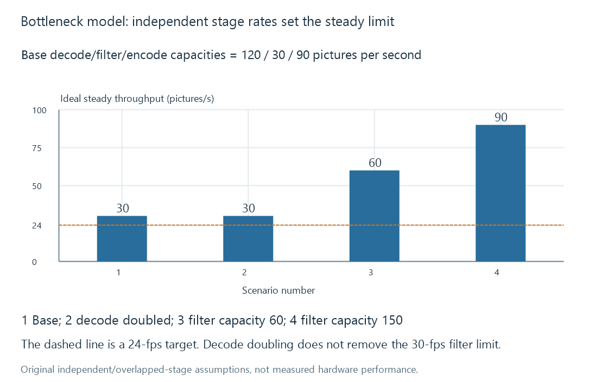

Transcoding bottlenecks
A transcoding bottleneck is the limiting processing or delivery dependency under the actual workload, which may differ from the most visible utilisation counter.
A bottleneck is the dependency that limits the current job. It can be decoding, filtering, encoding, resource access, transfers or delivery. A prominent CPU or GPU percentage is an observation, not a complete identification of that dependency.
The useful question is what prevents the next required usable media interval from becoming available in time.
A three-stage model
Assume original independent stage capacities for one specified picture format and workload:
| Stage | Service capacity | Ideal per-picture service time |
|---|---|---|
| Decode | 120 pictures/s | 8.33 ms |
| Filter | 30 pictures/s | 33.33 ms |
| Encode | 90 pictures/s | 11.11 ms |
If the stages can overlap with sufficient buffering and do not share another limiting resource, steady throughput cannot exceed the slowest stage: 30 pictures/s.
For a 24-fps output, that is 30 / 24 = 1.25x. The example has some idealised processing reserve, not a guarantee of smooth playback.
Latency adds while overlapped throughput can differ
A picture still needs the relevant work at each stage. The ideal sum of the listed service times is about 52.78 ms, before additional waits or buffering.
If pictures were processed strictly one at a time through all three stages, that sum would yield about 18.95 pictures/s. Overlap lets different pictures occupy different stages, producing the higher steady 30-picture/s result.
Thus reciprocal stage rates are useful for this defined model, but “the pipeline is 30 fps” does not mean every picture completes the whole dependency chain in 33.33 ms.
An upgrade can leave the limit in place

Doubling decode capacity from 120 to 240 pictures/s leaves the filter at 30. The ideal steady result stays 30.
Raising filter capacity to 60 changes the result to 60. Raising it to 150 leaves encoding at 90 as the new limit. The limiting stage moves as capacities change.
These are arithmetic outcomes for the assumed model, not measured improvements from buying a component or changing an Emby setting.
Shared resources break simple independence
Stages can compete for CPU cores, memory bandwidth or accelerator resources. A hardware decode path and hardware encode path can still require a filter in another memory domain.
For an ideal 24,883,200-byte picture buffer, two full-picture transfers per frame at 24 fps would move about 1.194 GB/s. Actual transfer volume and memory layout vary. The point is that copied decoded data has another scale from the source's compressed bitrate.
A graph that avoids a particular transfer can change that work. A utilisation counter alone does not establish whether a transfer was avoided.
Likewise, a blocked output writer can slow the whole process while an encoder appears idle. Faster encoding cannot make an unavailable temporary directory writable or fix a constrained delivery path.
Compare rates in compatible units
Storage/network rates in bytes or bits per second cannot be compared directly with pictures per second without the relevant media representation.
A source read rate concerns its encoded bytes. A picture transfer concerns raw surfaces. Output delivery concerns the generated encoded representation. Each conversion to “media seconds ready per wall second” needs the corresponding size/rate context.
Total CPU usage can also hide a single saturated worker or serial dependency. Low overall usage is not proof that no CPU-bound stage exists.
See Also
- How a transcoding pipeline works
- Real-time transcoding and playback deadlines
- Concurrent playback workloads
- Media filter graphs
- Transcode temporary files and generated output